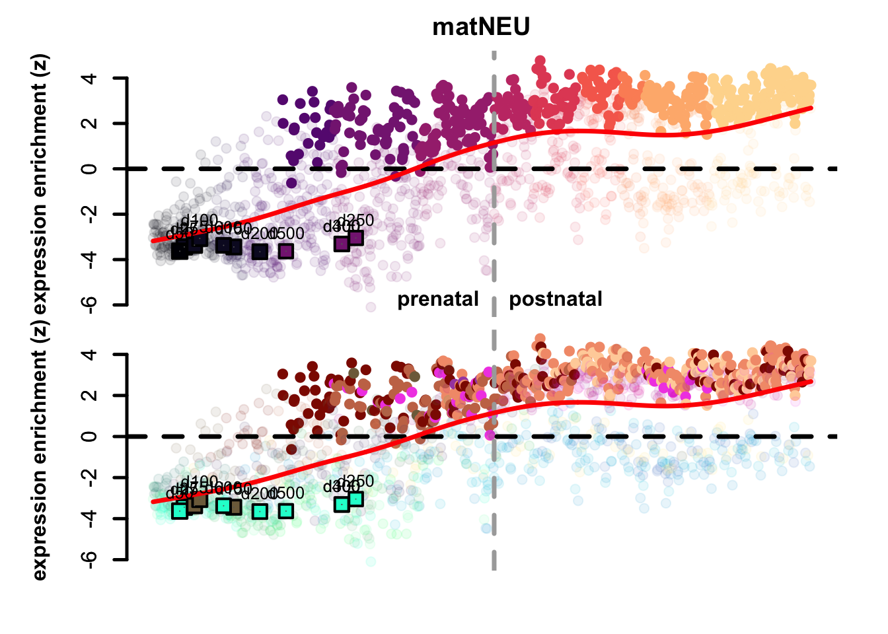
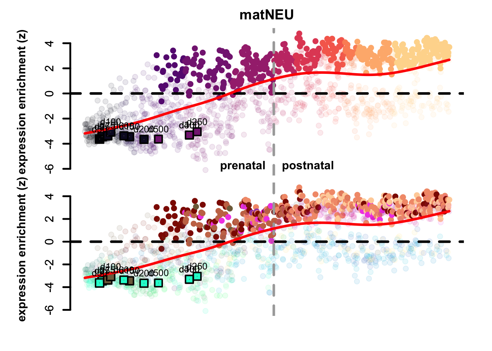

4 Mapping Bulk data
4.1 Quickstart
These are the main functions to map a bulk RNA-sequencing dataset on the corticogenesis resource. This implies that the data are already normalized. Below we report a detailed description and examples on how to perform mapping and further related analyses.
#STEP 1: load libraries
library(neuRoDev)
library(SingleCellExperiment)
library(gtools)
#STEP 2: load data
corticogenesis_sce <- corticogenesis.sce(directory = '~/Downloads')
data <- readRDS('my_data') #choose your data object
#STEP 3: mapping
mapped_bulk <- mapNetwork(net = corticogenesis_sce,
new_profiles = data)
#STEP 4: inspect mapping
mapped_bulk$new_plot
mapped_bulk$annotation$Barplot
mapped_bulk$annotation$Best.Annotation4.2 Loading necessary libraries and data
4.2.2 Loading the networks necessary objects
corticogenesis_sce <- corticogenesis.sce(directory = '~/Downloads')
neurogenesis_sce <- neurogenesis.sce(directory = '~/Downloads')
gliogenesis_sce <- gliogenesis.sce(directory = '~/Downloads')4.3 Mapping a bulk cell RNAseq dataset
This example dataset from Gordon et al. (2021) can be downloaded from: …
This dataset contains bulk RNAseq expression of organoid samples at different time points. For the scope of the analyses, we pre-processed the data, removing batch-effect using the package sva, and then computed Counts Per Million (CPM) (log-normalized, saved in logcounts). Pre-processing steps can be done differently and depending on your own dataset characteristics, but the following steps shown in this tutorial will apply to any bulk RNAseq samples. A lack of correct pre-processing steps may affect the results and interpretation of the following analyses.
bulk_sce <- readRDS('~/Downloads/bulk_sce.rds')We average between samples with the same differentiation day. If you are interested in variability between replicates, this step can be avoided.
bulk_average <- neuRoDev:::get_column_group_average(logcounts(bulk_sce),
bulk_sce$`differentiation day`)Differently than scRNAseq dataset mapping (see Chapter Mapping Single-cell data), bulk RNAseq datasets don’t need further processing into transcriptional profiles, as they already represent a pool of cells sequenced together. Hence, bulk samples can be directly mapped using the mapNetwork function, that requires the following main inputs:
-
net: the reference network to use -
new_profiles: the transcriptomic profiles to map
Other useful inputs can be checked by ?mapNetwork
mapped_bulk <- mapNetwork(net = corticogenesis_sce,
new_profiles = bulk_average)We can now visualize the network with the mapped clusters on top:
mapped_bulk$new_plotFigure 4.1: Corticogenesis network with mapped samples.
From the visualization, we can already appreciate how the samples at early days (d25, d50) map close to radial glia clusters, moving towards immature neurons in days 75, 100 and 150. Nevertheless, from day 200 we can see that there is a unexpected transcriptional switch and samples return to map closer to radial glia. This could mean either that they somehow went back to a more undifferentiated state, or that they start looking more like mature glia (astrocytes in particular, which are similar to radial glia, also biologically). To investigate in deep these differences, it is possible to leverage the analyses tools described below.
Since newly mapped samples will locate close to the most similar reference clusters, it is possible to qualitatively understand the most similar subclass for each mapped point. To quantify this similarity, we developed a score per subclass per mapped sample, using the 15 most similar reference clusters’ annotations (the number of reference clusters to use can be set by changing n_nearest in the mapNetwork function). The score can be visualized by:
mapped_bulk$annotation$Barplot
Figure 4.2: Annotation scores across samples
Days 250, 300 and 400 have a small resemblance to astrocytes, but this is lost in days 500 and 600.
To get a single label for each mapped cluster, we take the maximum of these scores. This depicts the most similar subclass among the closest neighbors.
mapped_bulk$annotation$Best.Annotation
#> d25 d50 d75 d100 d150 d200 d250
#> "RG" "RG" "imNIT" "imNIT" "imNIT" "RG" "RG"
#> d300 d400 d500 d600
#> "RG" "RG" "RG" "RG"The same quantification can be done for stages instead of subclasses, either by specifying color_attr = 'Stages' in the mapNetwork function, or by running the annotateMapping function, which requires the following inputs:
-
net: the reference network to use. -
new_cor: the correlation between mapped points and reference clusters, can be found bymapped_object$new_cor. -
color_attr: the annotation label to use, in this case ‘Stages’.
Our mapping strategy allows the mapping of any expression matrix, thus we added a quantification of the mapping confidence, described with two diverse measures:
local score (
mapped_object$annotation$Mapping.Confidence) for each mapped point, showing average of the 15 highest correlation values that mapped point has with the reference clusters.global score (
mapped_object$annotation$Global.Confidence), describing the average confidence among all mapped point.
The confidence values can be accessed in the following way:
# global confidence
mapped_bulk$annotation$Global.Confidence
#> [1] 0.6783803
# per cluster confidence
mapped_bulk$annotation$Mapping.Confidence
#> d25 d50 d75 d100 d150 d200
#> 0.7468790 0.7425336 0.7363235 0.7106007 0.6891449 0.6729147
#> d250 d300 d400 d500 d600
#> 0.6236117 0.6462351 0.6386074 0.6045623 0.6507705We can see that generally the mapped samples have relatively high confidence, but it decreases in the last days compared to the first.
A further analysis is mapping the samples directly on the eTraces, to see how similar they are to clusters that express more or less certain genes. The function to perform such analysis is map_eTrace, which requires the following inputs:
-
net: the reference network to use. -
mapped_obj: the result of mapNetwork. - the inputs required to run plot_eTrace (see the Chapter Analysis tools).
We can visualize the expression of preferentially expressed genes in the relevant subclasses. We report gene sets preferentially expressed in each reference subclass or subclass group here: …
corticogenesis_pe_genes <- readRDS("~/Downloads/corticogenesis_subclass_preferential_genes.rds")
neurogenesis_pe_genes <- readRDS("~/Downloads/neurogenesis_subclass_preferential_genes.rds")
gliogenesis_pe_genes <- readRDS("~/Downloads/gliogenesis_subclass_preferential_genes.rds")
map_eTrace(net = corticogenesis_sce,
mapped_obj = mapped_bulk,
genes = corticogenesis_pe_genes$RG,
main = 'RG')
map_eTrace(net = corticogenesis_sce,
mapped_obj = mapped_bulk,
genes = corticogenesis_pe_genes$miEN.imNIT.eEN,
main = 'immEN')
map_eTrace(net = corticogenesis_sce,
mapped_obj = mapped_bulk,
genes = corticogenesis_pe_genes$L6IT.L6NIT.L35IT.L23IT.SST.VIP.PVALB.LAMP5,
main = 'matNEU')
map_eTrace(net = corticogenesis_sce,
mapped_obj = mapped_bulk,
genes = corticogenesis_pe_genes$Astro,
main = 'Astrocytes') 

Figure 4.3: Preferential genes eTrace in corticogenesis and mapped points.
The eTrace of radial glia markers describes the same pattern shown when looking at the mapping on the network: the mapped points form a circle from early time points to late ones, that goes back to showing resemblance to early radial glia clusters. This further indicates that not only the look more similar to radial glia than neurons, but also that they look more similar to early radial glia compared to late ones. By looking instead at the eTrace of immature excitatory neuron markers, we can see that samples from d75 to d200 are above the average line (d200 being the lowest), pointing to the fact that only these time points show a similarity to immature neurons. By plotting instead the eTrace of mature neurons, no sample shows particularly high values, suggesting that organoids do not recapitulate the full maturity described by in vivo samples. Lastly, the eTrace of astrocyte markers shows that days from 250 to 400 are indeed higher than the other samples (but also late radial glia clusters show relatively high values), but clearly that days 500 and 600 are much lower.
We show here a function (plotTrends) to visualize the expression of preferentially expressed genes in the bulk samples, as an example of further possible analyses that can be performed with the provided resources. The function is not included in the main functions of the package, but can be accessed by neuRoDev::plotTrends. The function requires the following inputs:
-
net: the reference network to use. -
pref_exp_genes: the preferentially expressed genes list. -
sce: the external object in the form of a SingleCellExperiment object. -
profiles: the actual expression matrix used for the mapping. -
coldata: where to find the information of the replicates used for averaging. -
subclass: if indicated as a vector it selects only a subset of reference subclasses. Defaults to all subclasses. -
ylim: the lower and upper limits of the y-axis (defaults to NULL, which goes back to the automatic R plot ylim). -
together: defines if the different preferentially expressed genes should be plotted together (adjustylimaccordingly) (defaults to FALSE). -
relative: if TRUE, the expression is scaled from 0 to 1 (defaults to FALSE).
neuRoDev:::plotTrends(net = corticogenesis_sce,
pref_exp_genes = corticogenesis_pe_genes,
subclass = c('Astro', 'cRG'),
sce = bulk_sce,
profiles = bulk_average,
coldata = 'differentiation day',
together = TRUE,
ylim = c(2.5, 5.5))
Figure 4.4: Preferential genes of astrocytes and cycling radial glia expression in mapped data points.
Astrocyte markers increase up to day 400, but then decrease again and are overcome by cycling radial glia markers at time points (d500, d600).
This is consistent with the expression levels of GO processes manually curated in our resource. These are available at: … and represent curated pathways relevant in corticogenesis and neurogenesis.
corticogenesis_GO <- readRDS('~/Downloads/corticogenesis_GOBP_genesets.rds')
neurogenesis_GO <- readRDS('~/Downloads/neurogenesis_GOBP_genesets.rds')To assess the expression levels of these processes, we first have to obtain the average expression of those gene sets in the mapped data:
bulk_cortico_GOBP <- do.call(rbind, lapply(corticogenesis_GO, function(g) {
g <- g[which(g %in% rownames(bulk_sce))]
Matrix::colMeans(bulk_average[g,])
}))
rownames(bulk_cortico_GOBP) <- gsub(" \\(GO:[0-9]+\\)$", "", rownames(bulk_cortico_GOBP))
bulk_cortico_GOBP <- bulk_cortico_GOBP[,mixedorder(colnames(bulk_cortico_GOBP))]Then, we can visualize the relative expression in an heatmap.
To compare this expression with the preferential expression of these genesets in our resource, it is possible to download the preferential expression of Gene Ontology Biological Processes (BP), Molecular Functions (MF), and Cellular Components (CC) here. Each object is a list containing preferential expression scores in one of the three reference networks in the three ontologies (BP, MF, CC). Each element of each list contains the activity (activity) derived from Gene Set Variation Analysis (one value per gene set in each cluster) and the preferential expression scores (preferential; one value per gene set in each subclass).
# select the path in which you have saved the objects!
corticogenesis_preferential_GO <- readRDS('~/Downloads/corticogenesis_preferential_GO.rds')
neurogenesis_preferential_GO <- readRDS('~/Downloads/neurogenesis_preferential_GO.rds')
gliogenesis_preferential_GO <- readRDS('~/Downloads/gliogenesis_preferential_GO.rds')Show the code (simplifying labels)
cortico_subclass_groups <- colnames(corticogenesis_preferential_GO$GO_Biological_Process_2025$preferential)
cortico_subclass_groups[which(cortico_subclass_groups %in% c('L23IT', 'L35IT', 'L6IT', 'L6NIT'))] <- 'matEN'
cortico_subclass_groups[which(cortico_subclass_groups %in% c('LAMP5', 'SST', 'PVALB', 'VIP'))] <- 'matIN'
cortico_subclass_groups[which(cortico_subclass_groups %in% c('imIT', 'imNIT', 'eEN', 'miEN'))] <- 'immEN'
cortico_subclass_groups[which(cortico_subclass_groups %in% c('eIN', 'imIN'))] <- 'immIN'
cortico_subclass_groups[which(cortico_subclass_groups %in% c('Opc', 'Oligo', 'Astro'))] <- 'maGlia'
cortico_subclass_groups[which(cortico_subclass_groups %in% c('Micro'))] <- 'miGlia'
cortico_subclass_groups[which(cortico_subclass_groups %in% c('RG', 'cRG', 'IPC'))] <- 'Prog'
cortico_subclass_groups <- factor(cortico_subclass_groups, levels = c('Prog', 'immEN', 'immIN', 'matEN', 'matIN', 'maGlia', 'miGlia'))
cortico_gobp_groups <- factor(c(rep('Astro', 4), rep('Oligo', 3), rep('Opc', 3), rep('OligoGlia', 2), rep('matEN', 4), rep('matIN', 4), rep('immEN', 4), rep('Micro', 4), rep('Prog', 4), rep('Stress', 4)), levels = c('Prog', 'immEN', 'matEN', 'matIN', 'Opc', 'Oligo', 'OligoGlia', 'Astro', 'Micro', 'Stress'))
cortico_gobp_pe <- corticogenesis_preferential_GO$GO_Biological_Process_2025$preferential[names(corticogenesis_GO),]
rownames(cortico_gobp_pe) <- gsub(" \\(GO:[0-9]+\\)$", "", rownames(cortico_gobp_pe))Show the code (plotting heatmap)
ht1 <- Heatmap(
cortico_gobp_pe,
name = 'preferential\nexpression',
width = unit(ncol(cortico_gobp_pe) * 4.2, 'mm'),
height = unit(nrow(cortico_gobp_pe) * 4.2, 'mm'),
show_row_dend = FALSE,
show_column_dend = FALSE,
row_title_rot = 0,
column_title_rot = 90,
column_split = cortico_subclass_groups,
cluster_column_slices = FALSE,
row_split = cortico_gobp_groups,
cluster_row_slices = FALSE,
column_title_gp = gpar(fontsize = 0)
)
ht2 <- Heatmap(
t(scale(t(bulk_cortico_GOBP))),
name = 'scaled\nexpression',
width = unit(ncol(bulk_cortico_GOBP) * 4.2, 'mm'),
cluster_columns = FALSE, right_annotation = rowAnnotation(max = anno_barplot(apply(bulk_cortico_GOBP, 1, max), gp = gpar(fill = 'black')), annotation_name_side = 'top', annotation_name_rot = 0)
)
ht_list <- ht1 + ht2
draw(ht_list, heatmap_legend_side = "left")
Figure 4.5: Heatmap of corticogenesis-specific GO biological processes in resource and mapped samples.
From this heatmap we can see that radial glia biological processes are highly expressed in the first 2-3 time points, but also in the last two. This, together with a high expression of stress-related processes (which increases as time progresses) suggests that indeed the last days are more stressed rather than being more similar to astrocytes. Also neuronal processes start around day 75, but decrease around days 300-400.
The same type of analysis can be done with the neurogenesis network:
bulk_neuro_GOBP <- do.call(rbind, lapply(neurogenesis_GO, function(g) {
g <- g[which(g %in% rownames(bulk_average))]
Matrix::colMeans(bulk_average[g,])
}))
rownames(bulk_neuro_GOBP) <- gsub(" \\(GO:[0-9]+\\)$", "", rownames(bulk_neuro_GOBP))
bulk_neuro_GOBP <- bulk_neuro_GOBP[,mixedorder(colnames(bulk_neuro_GOBP))]Show the code (simplifying labels and plotting heatmap)
neuro_gobp_pe <- neurogenesis_preferential_GO$GO_Biological_Process_2025$activity[names(neurogenesis_GO),]
neuroTrends <- do.call(cbind, lapply(rownames(neuro_gobp_pe), function(i) smooth.spline(1:length(neuro_gobp_pe[i,]), neuro_gobp_pe[i,], spar = 1)$y))
colnames(neuroTrends) <- rownames(neuro_gobp_pe)
neuroTrends <- t(neuroTrends)[names(neurogenesis_GO),]
neuroTrends <- neuroTrends[order(apply(neuroTrends, 1, which.max), Matrix::rowMeans(neuroTrends)),]
rownames(neuroTrends) <- gsub(" \\(GO:[0-9]+\\)$", "", rownames(neuroTrends))
stage_palette <- unique(neurogenesis_sce$Stages_color)
names(stage_palette) <- unique(neurogenesis_sce$Stages)
h1 <- Heatmap(t(scale(t(neuroTrends))),
cluster_columns = F,
cluster_rows = F,
bottom_annotation = HeatmapAnnotation(df=data.frame(stage=neurogenesis_sce$Stages),
col=list(stage=stage_palette),
show_legend = F,
show_annotation_name = F),
name = 'inferred expression\n(z scaled)',
height = unit(100, 'mm'),
width = unit(30, 'mm'),
row_names_max_width = unit(20, "mm"))
ht2 <- Heatmap(
t(scale(t(bulk_neuro_GOBP[rownames(neuroTrends),]))),
name = 'scaled\nexpression',
width = unit(ncol(bulk_neuro_GOBP) * 4.2, 'mm'),
cluster_columns = FALSE, right_annotation = rowAnnotation(max = anno_barplot(apply(bulk_neuro_GOBP[rownames(neuroTrends),], 1, max), gp = gpar(fill = 'black'))), , row_names_max_width = unit(20, "mm")
)
ht_list <- h1 + ht2
draw(ht_list,
heatmap_legend_side = "left")Figure 4.6: Heatmap of neuroogenesis-specific GO biological processes in resource and mapped samples.
We can see that neuroinflammatory response regulation increases over time, as well as regulation of neuron apoptotic process.
Another approach to confirm our findings is to obtain markers for each sample using the edgeR and limma packages and plot those genes in the eTraces.
We can obtain an edgeR object in the following way:
dge_obj <- DGEList(counts=counts(bulk_sce),
samples=cbind(colData(bulk_sce),
bulk_sce$`differentiation day`))
keep <- filterByExpr(dge_obj,
group=bulk_sce$`differentiation day`)
dge_obj <- dge_obj[keep, , keep.lib.sizes=FALSE]
dge_obj <- calcNormFactors(dge_obj)We can then compute differential expression between differentiation days:
Show the code (differential expression)
unique_groups <- unique(bulk_sce$`differentiation day`)
de_list <- list()
for (g in unique_groups) {
binary_group <- ifelse(bulk_sce$`differentiation day` == g, g, paste0("Not", g))
binary_group <- factor(binary_group)
sample_info <- data.frame('binary_group' = binary_group,
'groups' = bulk_sce$`differentiation day`)
design <- stats::model.matrix(~ binary_group, data=sample_info)
dge_obj <- estimateDisp(dge_obj,
design)
fit <- glmQLFit(dge_obj,
design)
qlf <- glmQLFTest(fit,
coef=2)
res <- topTags(qlf,
n=Inf)
res <- res$table[which(res$table$FDR < 0.05),]
if(all(sign(res$logFC) == sign(res$logFC)[1])) {
de_list[[g]] <- res
next()
}
v1 <- Matrix::colMeans(bulk_average[rownames(res)[which(res$logFC > 0)],])
v2 <- Matrix::colMeans(bulk_average[rownames(res)[which(res$logFC < 0)],])
if(rank(v1)[g] > rank(v2)[g]) {
res <- res[which(res$logFC > 0),]
} else {
res <- res[which(res$logFC < 0),]
}
de_list[[g]] <- res
}Show the code (filtering genes)
de_list <- lapply(de_list, function(i) {
i$score <- -log10(i$FDR)
i <- i[order(i$score, decreasing = T),]
return(i)
}
)
markers <- lapply(de_list, function(i) {
rownames(i)
}
)
markers <- lapply(markers, function(i) {
i[which(i %in% rownames(corticogenesis_sce))]
}
)
markers <- markers[which(unlist(lapply(markers, length)) > 0)]
for(i in names(markers)) {
g <- markers[[i]]
g <- g[which(g %in% rownames(corticogenesis_sce))]
plot_eTrace(net = corticogenesis_sce, genes = g, main = i)
}


Figure 4.7: eTrace of sample-specific differential genes in corticogenesis.
From this analysis we can appreciate how genes differentially expressed in the different samples are expressed in our reference. We can appreciate how genes differentially expressed in organoids from the early time points decrease their expression over time, particularly those of day 25. From day 75 to day 200 we notice that the differentially expressed genes are mainly neuronal, and in particular for day 200, and they are highly expressed in immature neurons, decreasing along maturation. Interestingly, differentially expressed genes in days 300 and 400 are indeed more expressed by astrocytes and increase over time, while those specific for day 600 are higher in radial glia cells and microglia, which usually hints to a stress response (! microglia shouldn’t populate these organoids).